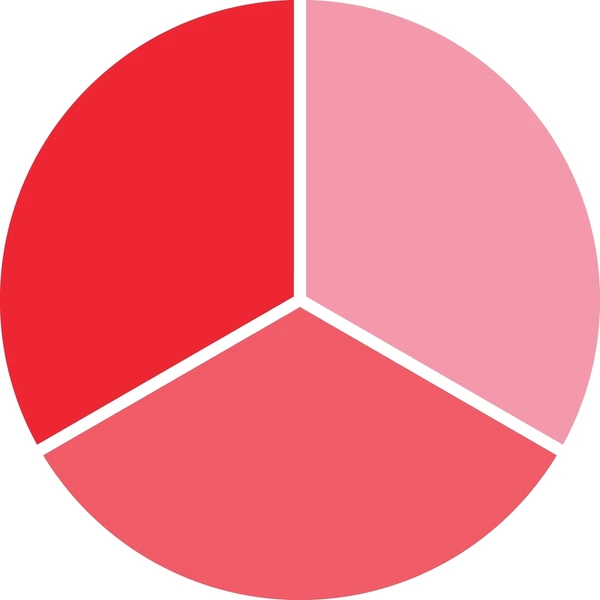

Les Concepts Clés
Comprendre les piliers fondamentaux qui rendent la virtualisation possible.

Le Partitionnement
La capacité à diviser les ressources d'un serveur physique unique (CPU, RAM, Disque) pour exécuter plusieurs machines virtuelles simultanément. Chaque VM pense avoir le matériel pour elle seule.
L'Isolation
Chaque machine virtuelle est isolée des autres. Si une VM plante ou est attaquée par un virus, les autres machines et l'hôte physique ne sont pas affectés. C'est un gage de sécurité majeur.
L'Encapsulation
Une machine virtuelle complète (OS, applications, données) peut être enregistrée dans un simple fichier. Cela permet de la copier, de la déplacer ou de la sauvegarder aussi facilement qu'un document texte.